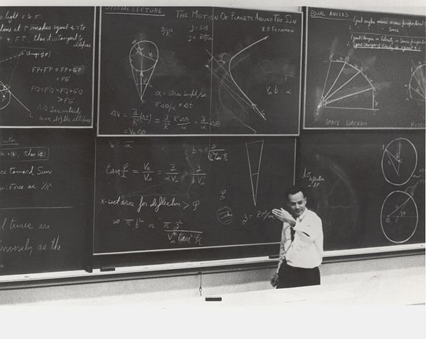
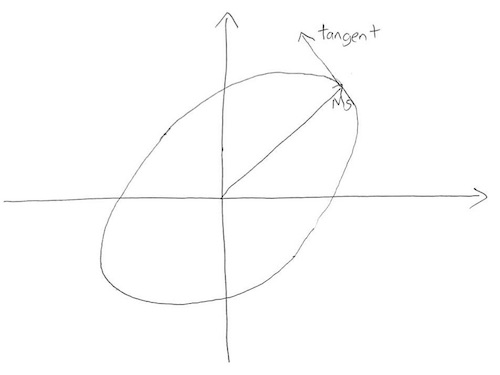
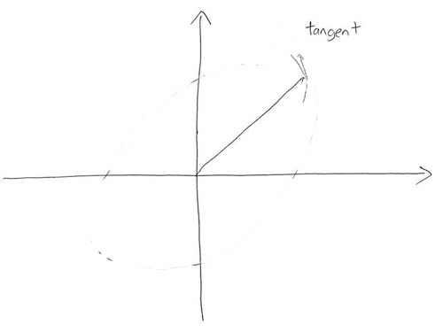
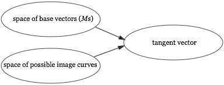
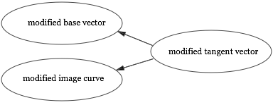
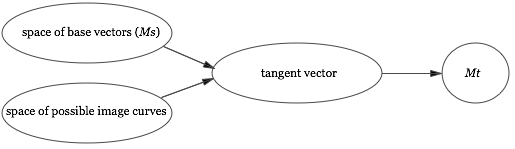
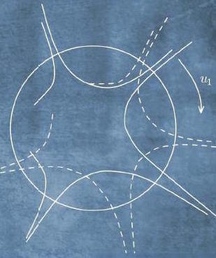

Michael Nielsen / Recurse Center / February 2016
XXX: Note that when I write XXX it means something that needs fixing, i.e., it's not part of the main document.
The world's oldest complete piece of surviving music is the 3,400 year old Hurrian cult hymn. A transcription of the hymn was found inscribed on clay tablets excavated from the ancient city of Ugarit, located in modern-day Syria. Sometime after the hymn was composed, the idea of using notation to record music was lost. Writing two millenia later, in the seventh century CE, the polymath Isidore of Seville stated that “unless [musical] sounds are held by the memory of man, they perish, because they cannot be written down.”
In the ninth century, European musicians began experimenting with notations to record plainchant. The initial notations were rough. They didn't precisely denote either pitch or rhythm, and were probably intended more as an aid to memory than as a recording medium. But they gradually improved. In the 11th century, Guido of Arezzo introduced the musical staff, making it easy to record pitch. And in the 13th century, Franco of Cologne suggested using a written note's appearance to signify duration. These and many other ideas led to modern musical notation.
Modern written music may have originated as a recording medium, but it gradually became a creative medium in its own right. It made it much easier to compose complex, intricate music for many instruments and many voices. This paved the way for Bach's fugues, Beethoven's symphonies, and so much else. Written music became a medium for thought, a medium which helped expand the range of musical ideas a composer could have, and thus changed music itself. It's an example of what I shall call a cognitive medium – an environment to support and enable thought.
In the modern day, digital computers have spurred the invention of many new cognitive media. Consider a program such as Photoshop. Adept users of Photoshop internalize tools such as the lassoo, the eyedropper, the clone stamp, and so on. The tools become part of the way they think about image manipulation, and gradually expand the range of graphical ideas they can have.
Photoshop is just one of the many cognitive media invented for digital computers. Other examples include musical scorewriting programs such as Finale and Sibelius, 3d modelling programs such as Blender and 3ds Max, and video game engines such as Unity and Unreal. Such media enable users to think and create in ways that would otherwise be difficult or impossible. They are a way of augmenting human intellect** This notion has been extensively developed by many researchers. See, for example, Douglas Engelbart's Augmenting Human Intellect: A Conceptual Framework, and Alan Kay and Adele Goldberg's Personal Dynamic Media..
This essay is about the design of cognitive media for mathematics. Well-known cognitive media for mathematics include programs such as Mathematica, Matlab, Sage, and Coq. These programs are useful, but conservative, in that the programs mostly aim to automate the solution of problems that would have been familiar to mathematicians of the 1950s. By contrast, in recent years many people** A partial list includes Bret Victor, Marc ten Bosch, and Steven Wittens. have experimented with media which don't just accept the basic language of mathematics as given, but rather attempt to change the fundamental representations and operations used in mathematical work. Over the long run, I believe this kind of experimentation will radically change how we think about mathematics.
As a step in this direction, in this essay I'll show a simple prototype medium which lets the user explore in a particular part of mathematics, namely, linear algebra. The prototype is based on three main ideas:
1. A concrete, graphical medium based on direct manipulation: When using paper-and-pencil (or its close cousin, blackboard-and-chalk), mathematicians often explore using informal, concrete, graphical representations, like those shown in the image to the right.* Photo credit: United States Department of Energy.  Such exploration is often difficult in existing computer-based cognitive media. While systems such as Mathematica are good at producing graphical output, they're not aimed at direct manipulation of those graphical representations. This make it difficult to reason in the concrete, graphical way common with paper-and-pencil. In this sense, paper-and-pencil is a medium which has never been entirely surpassed for mathematical work. Is it possible to strictly improve on paper-and-pencil as a medium for doing mathematics? Our prototype medium will aim to make direct manipulation easy. The intent is to combine the flexibility and concreteness of paper-and-pencil with the automated inference that is the raison d'être of traditional systems for doing mathematics by computer. Think something like “Photoshop for linear algebra”. That grossly overstates what we'll do, but has the benefit of conveying the right gist.
2. Work on a genuine mathematical problem, not a toy or “educational” problem: We'll develop our prototype as we work through a piece of genuine mathematics. It's a beautiful result in linear algebra called the singular value decomposition, or SVD for short. Aiming at the SVD makes the essay less accessible than working with a toy problem, but has the benefit that it forces us to confront and overcome the sort of problems which arise in real mathematical work. Of course, ideally we'd go even further than re-discovering existing mathematics, and use the medium to discover new mathematics. We won't achieve that here, but over the long run, this is the most stringent (and best) test of the utility of an exploratory cognitive medium: does it enable the development of important new mathematical ideas?
3. A medium for exploration and discovery, not explanation: Earlier, I mentioned the experimental cognitive media developed over the past few years. Many of these media are intended primarily as explanations – see, for a beautiful example, Vi Hart and Nicky Case's explanation of one of the economist Thomas Schelling's models of social behavior. By contrast, the prototype medium we'll develop is intended as an open-ended environment for exploration and discovery. In essence, we'll be working through a re-discovery of the SVD. I mention this because exploration and discovery is inherently a messier and more ad hoc process than explanation, and so you should expect this to be somewhat less legible than a straight-up explanation of the SVD.
What do we learn about cognitive media? The prototype itself is not the main point of the essay. Rather, we shall learn something striking and important from the prototype medium. In particular, we'll identify a fundamental problem in the design of exploratory cognitive media. The problem arises from desiring a medium that simultaneously: (1) automates computation and inference, as we expect a computer-based medium to do; and (2) allows the user to flexibly change assumptions on the fly, in a manner similar to that allowed by paper-and-pencil.
We'll show that the ability to flexibly edit assumptions sometimes makes it impossible to automate inference in other parts of the system. Mathematical inconsistencies arise: there is no single ground truth in the system, but rather multiple ground truths. These inconsistencies are not an accident or specific to our particular medium. Rather, they are inevitable in any cognitive medium that tries to simultaneously get the benefits of paper-and-pencil and the ability to automatically do computations and inference. To resolve this problem, we must develop both an internal data model for the medium and a user interface that lets us reason about these multiple ground truths. We'll identify a set of principles that enable us to do this. These principles and the problem they solve will be important in any exploratoy medium for mathematics.
If you're not familiar with the SVD, it's a way of breaking a matrix up into three simple components. It's most easily understood for a real $2 \times 2$ matrix $M$, where the SVD guarantees that it's always possible to break $M$ up into a rotation about the origin, followed by a rescaling of the co-ordinate axes, followed by a second rotation about the origin. Each of these three components is easy to reason about individually, and that can often make it easy to reason about the matrix as a whole. The great thing about the SVD is that it guarantees that every $2 \times 2$ matrix can be broken up in this way, for suitable choices of rotations and rescaling** Actually, the full statement of the SVD is slightly more complex. I'll explain it in a moment.. It's similar to the way knowing the prime factorization of a number can make it easier to reason about that number.
The SVD doesn't just apply to $2 \times 2$ matrices. For a real $n \times n$ matrix $M$, the SVD says such a matrix can always be decomposed as** There are versions of the SVD which apply to non-square matrices, to infinite matrices and linear operators, and to matrices over fields other than the real numbers. For our purpose, the $n \times n$ real case is a good level of generality. Many of the ideas can, in any case, be reused in more general contexts.
\begin{eqnarray} M = U \, {\rm diag}(s_1, s_2, \ldots, s_n) \, V. \end{eqnarray}
Here, the matrices $U$ and $V$ are real $n \times n$ orthogonal matrices. As you may guess from the earlier discussion, orthogonal matrices are generalizations of the 2-dimensional rotations. In particular, they're simply matrices which preserve length in $n$ dimensions, just as rotations preserve length in 2 dimensions. That is, if $U$ is an orthogonal matrix and $v$ is any vector, then the length $\|U v\|$ is always the same as the length $\|v\|$. Formally, a square matrix $U$ is defined to be orthogonal if $U^T U = I$, where $T$ is the transpose operation, and $I$ is the identity matrix** To see how this relates to length preservation, observe that $\|v\|^2 = v^T v$, i.e., the sum of the squares of the components of $v$. Using this observation we have $\|Uv \|^2 = v^T U^T U v = v^T v = \|v\|^2$, where we substituted $U^T U = I$ to obtain the second equality.. And so in the case of the SVD we have $U^TU = I$ and $V^T V = I$.
The other part of the singular value decomposition $(1)$ was the diagonal matrix ${\rm diag}(s_1, s_2, \ldots, s_n)$. The diagonal entries $s_1 \geq s_2 \geq \ldots \geq s_n \geq 0$ are known as the singular values of the matrix $M$. These singular values simply rescale the corresponding directions in $n$-dimensional vector space. Putting it all together, the SVD tells us that any matrix can be broken up into an orthogonal “rotation”, followed by a rescaling, followed by another orthogonal “rotation”** I told a small lie in my explanation of the $2 \times 2$ case. The $2 \times 2$ orthogonal matrices include not just rotations, but also reflections. As an example, consider the matrix $\begin{bmatrix} 1 & 0 \\ 0 & -1 \end{bmatrix}$, which reflects about the $x$ axis. It's easily verified that this is an orthogonal matrix, but it's most certainly not a rotation. In fact, you can show that an arbitrary $2 \times 2$ orthogonal matrix is either a rotation, or can be written as a product of $\begin{bmatrix} 1 & 0 \\ 0 & -1 \end{bmatrix}$ with a rotation. An analogous statement is true in $n$ dimensions. In practice, you mostly won't be led astray if you ignore the reflections, and think of orthogonal matrices as rotations in $n$ dimensions..
While we're going to prove the SVD, the proof is not the main point of the essay. As such, I will take it for granted that you're willing to believe the SVD is interesting. This means we won't get deeply into the applications or meaning of the SVD. But with that said, it's worth knowing that the SVD is a very widely-used tool, for applications ranging from natural language processing to quantum computing to the comparison of protein structures. Indeed, it's one of the most useful tools in linear algebra, and arguably in all of mathematics.
In this section I explain the proof of the SVD in the case when $M$ is a $2 \times 2$ matrix. This proof contains all the essential ideas needed for the general proof, which we'll discuss later.
Rather than attack the problem head-on, let's start with a simpler and more natural problem. This problem will appear unrelated, but as we attempt to solve this problem our explorations will lead us to the SVD.
The simpler problem is the question of how much a $2 \times 2$ matrix $M$ stretches space? To understand what I mean by stretching space, consider the matrix
$$M = \begin{bmatrix} 1 & 1 \\ 1 & 0 \end{bmatrix}.$$If we let this matrix act on the vector $(1, 0) \equiv \begin{bmatrix} 1 \\ 0 \end{bmatrix}$ the vector becomes
$$M \begin{bmatrix} 1 \\ 0 \end{bmatrix} = \begin{bmatrix} 1 \\ 1 \end{bmatrix} $$The input vector $(1, 0)$ has length $1$, while the output vector $(1, 1)$ has length $\sqrt 2$. So the matrix stretches this particular input vector to become a factor $\sqrt{2}$ longer.
Of course, $(1, 0)$ isn't the only possible input vector. If the input were, say, $(0, 1)$ the output would be $M(0, 1) = (1, 0)$, which is the same length as the input. In that direction, $M$ doesn't stretch space at all.
The question we'll investigate is this: what is the maximal degree of stretching associated to some given matrix, $M$? In other words, if we consider all unit vectors $v$, what is the maximal value for the length $\| M v\|$?
I'm abusing terminology a little here – $M$ might actually shrink unit vectors in some directions, or even in every direction. But the term “stretch” is evocative, so we'll continue using it** Stretching is not a standard mathematical term. Mathematicians often refer to this maximal stretching as the matrix norm, or, a little more formally, as the matrix norm induced by the Euclidean distance..
We won't solve this problem immediately, but will instead do some exploration that helps us understand the problem. The exploration will be illustrated using a rough prototype of a cognitive medium for doing linear algebra. Think of what follows as someone doing real, live mathematical work, trying to better understand the maximal degree of stretching associated to a $2 \times 2$ matrix. This is a record of their explorations. To start the demo, please click “Play” below. Of course, in a real medium, you'd be able to interrupt, do your own exploration, and so on. But this is just a prototype, to explore ideas, and so I haven't built the medium out to do that. Here it is** XXX: When the essay ships, I will replace this with a video with audio voiceover rather than ticker-tape, making it easy to move backward and forward through the demo.:
Let's fill in the steps skipped above, to take the proof of the conjecture from geometric idea to rigorous proof. Let $T$ be the tangent vector at $Ms$. We're assuming $T$ has a component in the direction of $Ms$, that is, $Ms \cdot T > 0$. Because $T$ is the tangent to the image curve, vectors on the image curve near $Ms$ can be written as $Ms+\Delta T + O(\Delta^2)$ for some small parameter $\Delta$. The squared length of that vector on the image curve is:
$$\|Ms+\Delta T + O(\Delta^2)\|^2 = \|Ms\|^2+ 2 \Delta \, Ms \cdot T + O(\Delta^2)$$
But $Ms \cdot T > 0$, so for small $\Delta$ we have $\|Ms+\Delta T + O(\Delta^2)\|^2 > \|Ms\|^2$, i.e., moving along the image curve does, indeed, give us a vector longer than $Ms$. That's a rigorous proof of what we wanted to show.
We learned from the above explorations that the tangent to the image curve at $Ms$ is orthogonal to $Ms$. We can make this observation more explicit by expressing the tangent $T$ in terms of existing quantities like $M$ and $s$. To do this, recall that the image curve arose by applying $M$ to the unit circle. It should be plausible that the tangent to the image curve at $Ms$ is just $Mt$ where $t$ is the tangent to the unit circle at $s$. This can be proved with a tiny bit of calculus** I won't go through the details, though it's a good exercise if it's not immediately obvious. Incidentally, this is standard calculus, and could easily be something the medium automatically “knows”, and suggests to the user through the interface.. It's easiest to see the situation through an illustration:
We can make things even more explicit, noting that the tangent $t$ is orthogonal to $s$, since it's the tangent to a circle. And so the previous observation that the tangent to the image curve at $Ms$ is orthogonal to $Ms$ can be rewritten as:
Lemma: Let $s$ be the principal right singular vector of $M$, and let $t$ be orthonormal to $s$. Then $Ms$ is orthogonal to $Mt$.
The lemma tells us that the principal right singular vector $s$ is a very special vector. For orthonormal vectors $s$ and $t$ it usually is not the case that $Ms$ is orthonormal to $Mt$. What we learn from the lemma is that this is, however, true for the principal right singular vector. That's a powerful thing to know.
In fact, it actually lets us prove the SVD for $2 \times 2$ matrices. Let's use the lemma to explicitly construct each of the rotation-rescaling-rotation steps, in terms of $s, t, Ms$ and $Mt$. As before press “Play” on the demo below. Note that this is no longer intended to represent a prototype cognitive medium, for reasons that will become apparent later. Note also that I've moved $t$ and $Mt$ to the origin, emphasizing that $t$ is orthogonal to $s$, and $Mt$ is orthogonal to $Ms$.
To recap, we rotate the principal right singular vector $s$ to the first co-ordinate axis. This rotation automatically rotates the vector $t$ (which is orthonormal to $s$) to the second co-ordinate axis. We then rescale the first co-ordinate axis by a factor $\|Ms\|$, and the second co-ordinate axis by a factor $\|Mt\|$. And finally we rotate the rescaled vectors to $Ms$ and $Mt$. This last step makes crucial use of the lemma, since it's only possible because $Ms$ and $Mt$ are orthogonal.
By construction, this rotation-rescaling-rotation combination takes $s$ to $Ms$ and $t$ to $Mt$. In fact, it follows that the rotation-rescaling-rotation combination must do the same as $M$ for all possible inputs. The reason is that $s$ and $t$ form a basis for the vector space, and since both $M$ and the rotation-rescaling-rotation act linearly on vectors, $M$ and the rotation-rescaling-rotation have the same action on all vectors. Thus, $M$ is equal to the rotation-rescaling-rotation operation. And so we've proved the singular value decomposition for $2 \times 2$ matrices.
Well, that's pretty nice! We started out with a question about how much a matrix stretches space, and the singular value decomposition more or less dropped out of our exploration. In fact, while our proof of the SVD was in $2$ dimensions, the proof is easily extended to $n$ dimensions. That generalization is incidental to the main point of this essay, so I've sketched it out in Appendix A.
An interesting aspect of the discussion so far is that we actually haven't solved our original problem: to figure out the maximal degree of stretching. This mirrors what often happens in real mathematical work – you may not solve the problem you originally intended to solve, but you learn something interesting anyway! In fact, it's possible to use the SVD to solve our original problem, finding the maximal stretching. Again, this is incidental to the main point of this essay, and so I describe how to do it in Appendix B.
I glossed over a very interesting moment in our proof of the SVD. It's the point where we ask what happens if the tangent vector has a component in the direction of $Ms$. Let me remind you what happens. It takes just a few seconds:
XXX --- video excerpt from the earlier demo, showing the moment at which we click-and-drag on the tangent, and the corresponding adjustment of the image curve.
This appears simple and natural. It's the kind of thing a mathematician working with paper-and-pencil does almost without thinking. But in a computer-based medium, something sophisticated must be going on under the hood. To understand why, let's think about how the medium would model the actions shown. A natural approach is to start with a matrix $M$ which has some generic values filled in. In fact, the values for $s, t, Ms$ etcetera shown above are produced by the following matrix $M$:
$$M = \begin{bmatrix} 0.70 & -0.28 \\ 1.27 & 0.86 \end{bmatrix} $$
So, for example, the image curve is computed by applying this particular $M$ to the points making up the unit circle. And the principal right singular vector $s$ is computed from this $M$. And so on, for all the properties computed by the medium.
In using this specific $M$ we're following a time-honored mathematical tradition: in order to reason about some general class of objects – in this case, all the $2 \times 2$ matrices – our medium has picked out one particular $2 \times 2$ matrix, and is using it as a generic example. The benefit of doing this is that it lets the medium do all computations explicitly, so we can reason from concrete, easily-understood and visualized examples. So, for instance, using a concrete example makes it easy to notice that the tangent to the image curve at $Ms$ is orthogonal to $Ms$, when $s$ is the principal right singular vector. Of course, the medium only shows this for this specific matrix $M$. But the fact that the example matrix $M$ is generic makes it plausible that this phenomenon holds for any $2 \times 2$ matrix. Indeed, it would be easy to check for other choices of $M$, though I didn't explicitly show that happening. This practice of using concrete-but-generic examples to gain insight has been common practice all through mathematical history, but is made especially easy with digital computers** There's an art to picking out generic examples that don't mislead. That's not a problem I'm going to discuss in detail, but it's a fascinating subject. To develop a good concrete medium for doing mathematics, I suspect it's a subject which would need to be investigated in great depth. Incidentally, in his essay Up and Down the Ladder of Abstraction, Bret Victor has explored a powerful approach whereby it's sometimes possible to eschew generic examples, and instead work with concrete visualizations representing the space of all examples. .
Now, what happens when we drag the tangent away from its actual value to a value not orthogonal to $Ms$, as shown in the video just above?
Before the change the medium was keeping track of the following mathematical objects:
M: a 2 by 2 matrix, with entries 0.70, -0.28, ... The unit circle The image of the unit circle under M s: the principal right singular vector, with entries 0.89, 0.46 Ms: the result of applying M to s, with entries 0.49, 1.52 The tangent to the image curve at Ms, with entries -0.57, 0.18
What happens to the internal state of the medium when we change the tangent? Of course, our internal representation of the tangent must change. But there are challenges in updating our description of the other objects. Most glaringly, no matrix $M$ exists which has the desired values for $Ms$ and the changed tangent.
One natural response is to declare the value of $M$ to
be undefined. If we do that, then it's also
natural to declare $s$, the principal right singular vector of
$M$, as undefined. Ditto the image curve. Our
mathematical objects are all vanishing! We started with the
idea of computing everything from underlying concrete objects.
That's difficult to do when our objects no longer exist.
The problem is that we're trying to describe an impossible world. There is no consistent set of mathematical objects that satisfies all the constraints we've imposed in our system. And yet despite this inconsistency, we'd like to continue reasoning. After all, a mathematician working with pencil-and-paper has no trouble continuing at this point. The reason this is possible is that a static medium like paper-and-pencil does no computation or constraint-checking. The medium doesn't tell us it's not possible to edit
erasing and modifying the tangent and image curve so the image becomes
This is despite the fact that there is no matrix $M$ having the depicted values.
This lack of constraint checking is both a feature and a bug. Because paper-and-pencil doesn't enforce this kind of constraint checking, it relies on the mathematician to do the constraint-checking in their head in a principled way** In this, it's much like the way weakly-typed programming languages rely on programmers to be careful about what gets passed to a function. I suspect the right answer to the question “Should my language be strong or weakly typed?” is “Both!”.. That's a substantial cognitive burden. But it also gives the mathematician a lot of freedom to carry out counterfactual reasoning, like we did in the last section.
One possible response is to puritanically say “Oh, well, we shouldn't do this kind of reasoning in our medium”. While that would be convenient, it'd be burying our head in the sand. Real mathematicians engage in this kind of counterfactual reasoning all the time. They're happy to imagine impossible worlds en passant, and to make progress by asking “What would happen if this world actually existed?”
Systems for doing mathematics by computer, such as Matlab and Mathematica, are often terrific at doing computations with concrete objects. They can verify in a flash that $Ms$ is orthogonal to $Mt$ for any specific choice of matrix $M$. But they don't always make it easy to do counterfactual reasoning. You can't easily ask Matlab to suppose that $Ms$ is not orthogonal to $Mt$. And this actually makes it harder to prove that $Ms$ is always orthogonal to $Mt$, for any $2 \times 2$ matrix $M$. If we make counterfactual reasoning difficult, then we greatly weaken our medium of discovery.
What we'd ideally like is a medium supporting what we shall call semi-concrete reasoning. It would simultaneously provide: (1) the ability to compute concretely, to apply constraints, and to make inferences, i.e., all the benefits we expect a digital computer to apply (and which made it so easy to notice that $Ms$ is orthogonal to the tangent in the first place); and (2) the benefits of paper-and-pencil, notably the flexibility to explore and make inferences about impossible worlds. As we've seen, there is tension between these two requirements. Yet is is highly desirable that both be satisifed simultaneously if we are to build a powerful exploratory medium for doing mathematics. That is true not just in the medium I have described, but in any exploratory medium.
In the next section I sketch an approach to building a system for semi-concrete reasoning. We shall see that this is a challenging problem, with open-ended components involving the psychology of the user, and what constitutes “natural” modes of mathematical inference. We won't completely solve the problem. But we will at least better understand some of the principles to be followed in any system for semi-concrete reasoning.
In our earlier discussion, we implicitly assumed our medium has an internal data model that represents mathematical reality. In particular, having updated the value for the tangent, we assumed it was the job of the medium to find a corresponding consistent value for $M$ and for other quantities in the problem.
It's possible to proceed in a different fashion. Instead of using our medium's data model to represent mathematical reality, we can instead use the medium's data model to represent the user's current state of mathematical knowledge. This makes sense, since in an exploratory medium we are not trying to describe what is true – by assumption, we don't know that, and are trying to figure it out – but rather what the user currently knows, and how to best support further inference.
Having adopted this point of view, user interface operations correspond to changes in the user's state of mathematical knowledge, and thus also make changes in the medium's model of that state. There is no problem with inconsistency, because the medium's job is only to model the user's current state of knowledge, and that state of knowledge may well be inconsistent. In a sense, we're actually asking the computer to do less, at least in some ways, by ignoring constraints. And that makes for a more powerful medium.
Having adopted this point of view, the question is how the medium can best support the user's mathematical exploration and further inference. The simplest approach is to allow the user to manually edit the mathematical world, with little assistance from the computer in doing inference:
This sequence of operations corresponds roughly to the operations performed by a human mathematician with paper-and-pencil. The internal state of the medium after these operations would be:
M: a 2 by 2 matrix, with entries 0.70, -0.28, ... The unit circle The edited image curve s: the principal right singular vector, with entries 0.89, 0.46 Ms: the result of applying M to s, with entries 0.49, 1.52 The edited tangent to the image curve at Ms, with entries -0.15, 0.5
This is not a consistent mathematical world. It doesn't need to be, since the purpose of our medium's data model is no longer to represent a consistent mathematical world, but to represent the user's current state of mathematical knowledge, and to support further inference.
Of course, it's disappointing to require the user to make all inferences manually, as they would with paper-and-pencil. Ideally, an exploratory medium would help the user make inferences, give the user control over how these inferences are made, and make it easy for the user to understand and track the chain of reasoning. To appreciate the importance of these principles, consider the following medium:
In this medium, as we move the end of the tangent vector, the medium finds a new corresponding base point $Ms$ on the image curve. It chooses the new base point so the tangent vector is, indeed, a genuine tangent to the image curve (which is presumed to be fixed). At the same time, the medium also recomputes the value of $s$, by multiplying the new value for $Ms$ by $M^{-1}$.
Now, in some proofs these may be exactly the desired inferential steps. But upon deeper consideration, this example illustrates some genuine design challenges. In particular, in general we'd like to use our medium to reason about a large number of mathematical objects. There is potentially an exponentially large number of ways changing one object can cause inferred changes in others. In order for the user to understand what is going on, the way inferred changes propagate needs to clearly communicated. In particular, the medium must be designed so the user can easily navigate the many possible chains of inference.
In paper-and-pencil mathematics, how we do inference depends upon what relationships we know between objects in the system. In this case, we know of just a single direct relationship between the tangent vector and other objects: the tangent is a function of the base point and the image curve** Note that later in the proof we learn that the tangent is equal to $Mt$. That's a second important relationship. However, I am speaking of what the user knows at the particular moment in time we're focused on.:
If we're using paper-and-pencil, we must use this relationship to deduce the implications of changing the tangent. The reason is that it's the only relevant thing we know. Effectively, we're inverting the relationship:
In this particular case, we want the base vector $Ms$ to remain unchanged, by assumption. Given that, we can infer what the image curve “must have been”, given the modifed value for the tangent. Of course, the modified image curve is not uniquely determined, and so with paper-and-pencil we sketch an illustrative curve segment. That illustrative curve segment is not supposed to literally be the implied curve segment; rather, it is a curve segment with approximately the right shape, and where the base point and tangent are exactly correct.
The paper-and-pencil reasoning is strikingly different to the earlier medium. In that medium, changing the tangent vector caused an immedate change to $s$. With paper-and-pencil any such inference would have required a two-step reasoning process: first, figure out what changing the tangent means for $Ms$, and then figure out what that change to $Ms$ means for $s$.
We could adopt a similar single-step inference approach to our exploratory medium. In such a medium, for every interface operation generating a new relationship between objects, there would be a corresponding interface operation enabling us to infer how changes in any one of those objects affects the other objects. In the specific case we've been considering, this means the task of the medium is to present the user a way of selecting from amongst the space of base vectors and segments of image curves** A point I've glossed over is how the medium knows what shape to use for the curve segment. One possible answer is to interpolate based on the original curve and the modified tangent. This is the strategy I used in the prototype, and it seems to work reasonably well..
With paper-and-pencil, this inversion needs to be performed mechanically. In an exploratory medium, the medium itself can guide us in doing the inversion. Of course, in this instance the inference isn't especially hard, so this is only a small win, but it nonetheless does help free the user to concentrate on higher-level reasoning.
Using the medium to support only a single stage of inference has several benefits. It naturally makes the chain of inference legible, since it mirrors the way we do inference with paper-and-pencil, every step made explicit, while reducing tedious computational work. It's also natural psychologically, since the user is already thinking in terms of these relationships, having defined the objects this way. Finally, and perhaps most importantly, it limits the scope of the interface design problem, since we need not design separate interfaces for the possibly unlimited(!) number of possible inferences. Rather, for every interface operation generating an object, we need to design an interface to propagate changes. That's a challenging but finite design problem. Indeed, in the worst case, a “completely manual” interface like that presented earlier may in general be used.
With that said, one could imagine mediums which performs multiple stages of inference in a single step, such as our earlier medium modifying $s$ in response to changes in the tangent. Designing such a medium would be much more challenging, since potentially many more relationships are involved (meaning more interfaces need to be exposed to the user), and it is also substantially harder to make the chain of reasoning legible to the user.
Even with the simplification of doing single-step inference, there are still many challenging design problems to be solved. Most obviously, we've left open the problem of designing interfaces to support these single stages of inference. We've seen two possible approaches for the particular case of relating the tangent to the base point and image curve. In general, solving this interface design problem is an open-ended empirical and psychological question. It's an empirical question insofar as different modes of inference may be useful in different mathematical proofs. And it is a psychological question, insofar as different interfaces may be more or less natural for the user. Every kind of relationship possible in the medium will require its own interface, and thus present a new design challenge. The simplest way to meet that challenge is to use a default-to-manual-editing strategy, mirror paper-and-pencil. But by providing additional inference options we can support more powerful reasoning, and strictly surpass paper-and-pencil.
A second design problem is the profusion of possible ways in which inference may occur. Later in the proof we connect the tangent not just to $Ms$ and the image curve, but also to $Mt$. At that point the user would be aware of two seaprate direct relationships involving the tangent vector:
The medium would then need to allow the user to make inferences about how changes to the tangent changed either $Mt$ or $Ms$ and the image curve. In general, the medium needs to allow the user to make choices between multiple types of inference possible at any given stage. This seems complex. But it mirrors the complexity inherent in the problem. The problem solver must make choices about how to investigate the effects of changes in assumption. The medium is merely reifying the choices that have to be made to make those inferences. The benefit of the medium is that it provides support to make those inferences and track their impact.
Outlook: In discussions of systems of reasoning it is sometimes assumed that the informal, intuitive systems used by humans are things to be “fixed up”, turned into so-called proper, rigorous reasoning. If the purpose of reasoning is merely verifying correctness, then that may well be correct. But if the purpose of reasoning is exploration and discovery, then it is wrong. Exploration and discovery require a logic that is different to, and at least as valuable, as conventionally “correct” reasoning** Related problems are addressed, using rather different ideas, by proof assistants such as Coq and Agda, constraint systems such as Sketchpad and its descendants, and by reasoning systems such as Prolog, Cyc and their descendants.. The idea of semi-concrete reasoning is a step toward media to support such exploration and discovery, and perhaps toward new ways of thinking about mathematics.
Alan Kay has asked “what is the carrying capacity for ideas of the computer?” We may also ask the closely related question: “what is the carrying capacity for discovery of the computer?” In this essay we've made progress on that question using a simple strategy: develop a prototype medium to represent mathematics in a new way, and carefully observe what happens and what we can learn when we use the prototype to attack a serious mathematical problem. In future, it'd be fruitful to pursue a similar strategy with other problems, and with more adventurous interface ideas.
To conclude, a personal observation. I began thinking seriously about the design of cognitive media just a few years ago. This is my first essay on the subject. I repeatedly discovered that interface design is deeper than I at first appreciated. A powerful medium reifies the deepest ideas we have about a subject: it becomes an active carrier for those ideas. And to the extent it is successful in reifying those ideas, mastering the medium becomes the same as mastering the subject. In this view, designing exploratory media is about designing tools which can transform and extend our ability to think, create, and discover.
XXX: There's many ways one could go further. Developing the reasoning system in detail -- the notion of developing a sort of type system to denote ontolological and epistemological status is particularly fun. But I'm uncertain about doing this. The results obtained are fun, but (at least so far) seem relatively minor. Of course, if I pushed on to build a system that really implemented semi-concrete reasoning that'd be worth recounting in detail. But I haven't done that, and it somehow seems like the wrong choice at this point in time.
Acknowledgements: Thanks to Dave Albert, Darius Bacon, Kovas Boguta, Ilona Brand, Jesse Tasse Gonzalez, Max McCrea, Prabhakar Ragde, Omar Rizwan, and John Workman for comments that helped improve this essay.
In the main body of the essay we learned how to prove the singular value decomposition in 2 dimensions. In fact, the same ideas can be used to prove the SVD in $n$ dimensions. I'll briefly sketch how the proof works in this appendix. It begins with exactly the same argument as we used earlier, showing that if $s$ is the principal right singular vector of $M$, and $t$ is any vector orthonormal to $s$, then $Ms$ is orthogonal to $Mt$. No modification is needed to establish this – the proof goes straight through.
From this, it can be shown using a construction similar to the $2 \times 2$ case that
$$M = U_1 \begin{bmatrix} s_1 & 0 \\ 0 & M' \end{bmatrix} V_1$$
where $U_1$ and $V_1$ are orthogonal matrices, and $M'$ is an $n-1$ by $n-1$ submatrix. Proving this is pretty straightforward, although it may be tedious if you're not so comfortable with linear algebra. The only real difference is that instead of working with a vector $t$ tangent to the principal right singular vector $s$, we instead work with the entire vector subspace tangent to $s$. I won't go through the details.
We can repeat this decomposition, breaking $M'$ up in terms of orthogonal matrices in $n-1$ dimensions and an $n-2$ by $n-2$ submatrix $M''$. Continuing in this way until we reach two dimensions, we obtain
$$M = U_1 U_2 \ldots {\rm diag}(s_1, s_2, \ldots, s_n) \ldots V_2 V_1,$$
where $U_1, V_1, U_2, V_2, \ldots$ are all orthogonal matrices. Since a product of orthogonal matrices is itself an orthogonal matrix, we obtain
$$M = U \, {\rm diag}(s_1, s_2, \ldots, s_n) \, V$$
for orthogonal matrices $U$ and $V$. This is the singular value decomposition.
It's notable that we developed the ideas underlying this proof in a visual environment depicting two spatial dimensions. We've then used algebraic-and-textual reasoning to extend that intuition to higher dimensions. This is a common procedure in paper-and-pencil based mathematical reasoning. Mathematicians develop fairly sophisticated ways of using informal two-dimensional representations to support more rigorous $n$-dimensional reasoning. Consider, for example, the following remark by mathematician Gil Kalai on high-dimensional reasoning:
 Vitali Milman, who works in high-dimensional convexity, likes to draw high-dimensional convex bodies in a non-convex way. This is to convey the point that if you take the convex hull of a few points on the unit sphere of $R^n$, then for large $n$ very little of the measure of the convex body is anywhere near the corners, so in a certain sense the body is a bit like a small sphere with long thin “spikes”.
A powerful exploratory medium for mathematics would build in such representational ideas, and would understand how to use them to support the transition from informal reasoning about low-dimensional representations to high-dimensional proofs.
Our earlier discussion showed that the largest singular value $s_1$ for a $2 \times 2$ matrix $M$ is equal to the maximal degree of stretching $\|Ms\|$. In fact, it's straightforward to adapt the reasoning in Appendix A to show that this is true also for an $n \times n$ matrix. That is, suppose an $n \times n$ matrix $M$ has singular value decomposition
$$M = U \,\mbox{diag}(s_1, s_2, \ldots, s_n) V,$$
with singular values $s_1 \geq s_2 \geq \ldots \geq s_n \geq 0$. Then the maximal degree of stretching is just
$$\max_{\|v \| = 1} \| Mv \| = s_1.$$
While this is a nice connection, it's not obvious it helps us figure out the maximal degree of stretching. After all, at this point we haven't figured out an explicit way of computing the singular values for a given matrix $M$. Fortunately, with a little work we can figure out not just $s_1$, but all the singular values. To do this, observe that from the SVD we have
$$M^T M = V^T \mbox{diag}(s_1^2, s_2^2, \ldots, s_n^2) V$$
since $U$ is an orthogonal matrix, and thus satisfies $U^T U = I$. Inspecting the last displayed equation, we see that the eigenvalues of $M^TM$ are just the squares of the singular values, $s_1^2, s_2^2, \ldots$. And so $s_1$ is just the square root of the largest eigenvalue of $M^TM$. This eigenvalue is easy to compute, which makes the singular value $s_1$ easy to compute. And that, in turn, makes it easy to compute the maximal degree of stretching for $M$.
Summing up, the maximal degree of stretching for a matrix $M$ is equal to the square root of the largest eigenvalue of $M^TM$. This gives an easy, computationally feasible way of computing the maximal degree of stretching, and thus solves our original problem. This also illustrates a point made when we first discussed the SVD: knowing the SVD is true sometimes makes it much easier to reason about a matrix.
.jpg){kind=link}